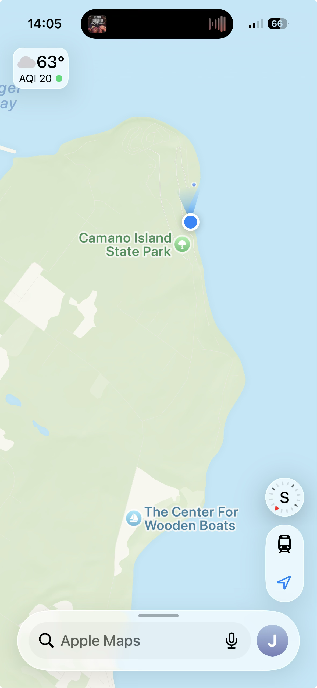
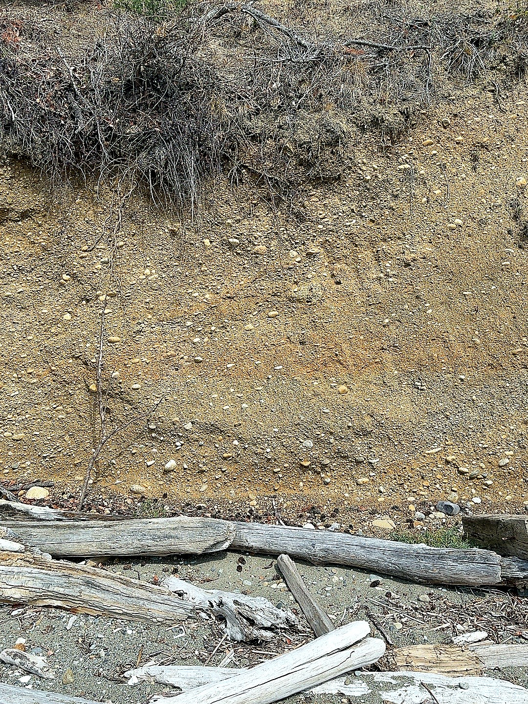
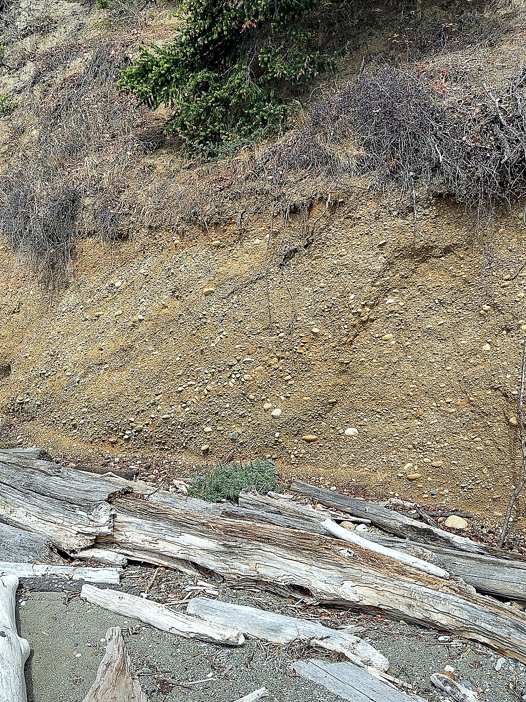
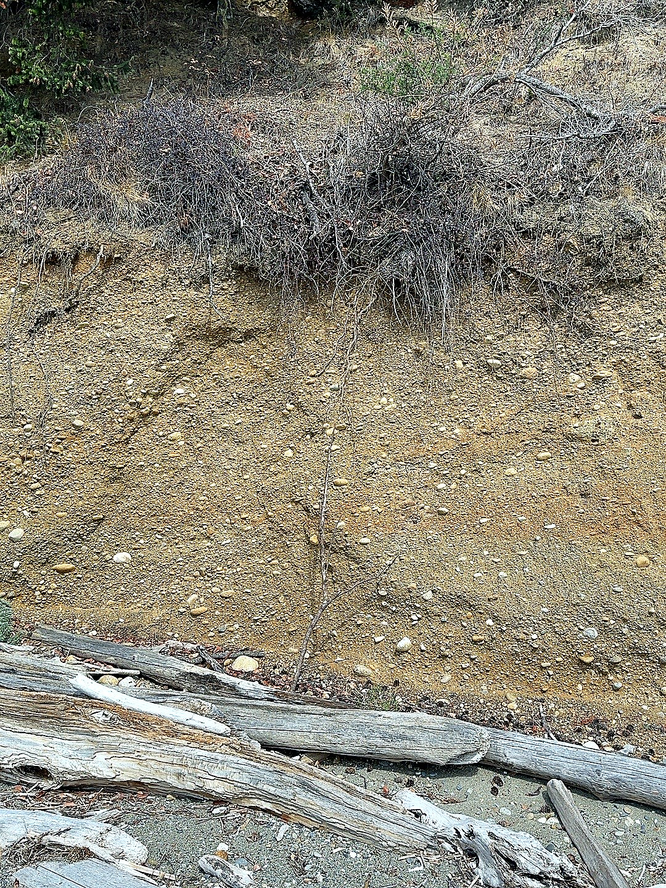
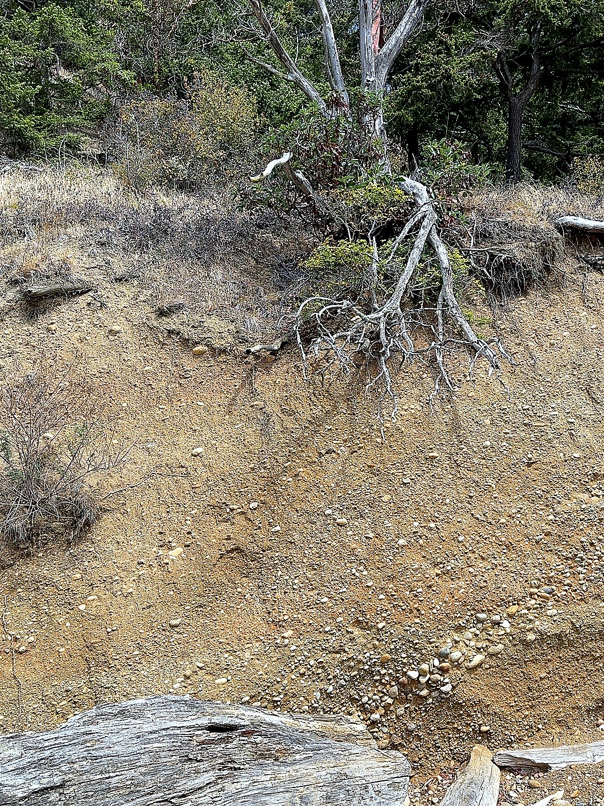
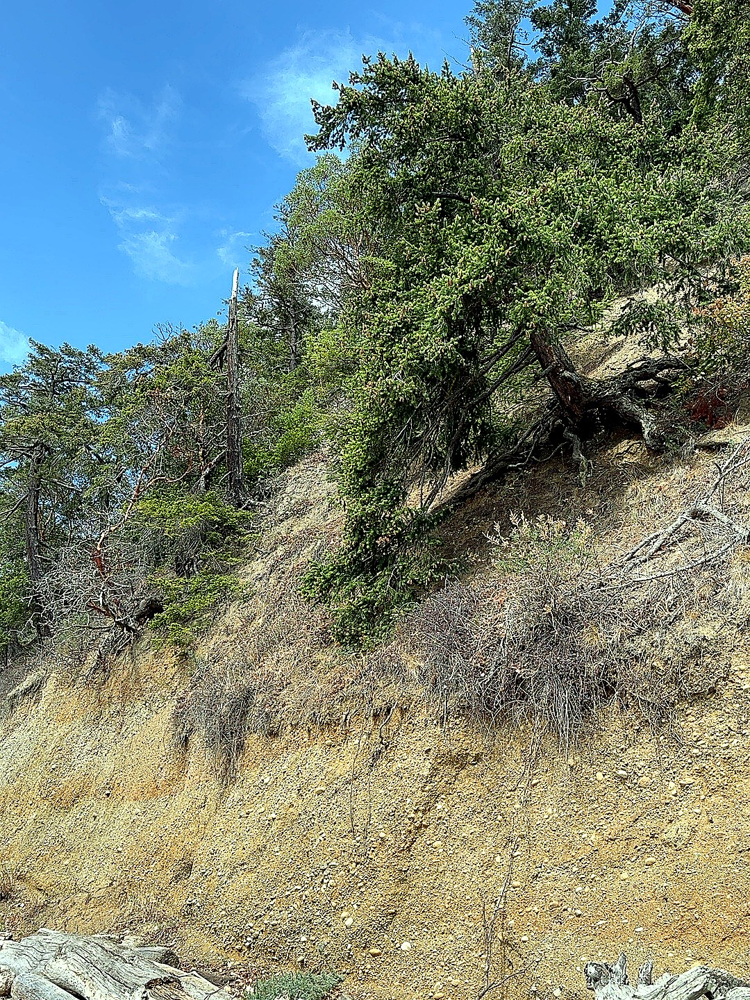
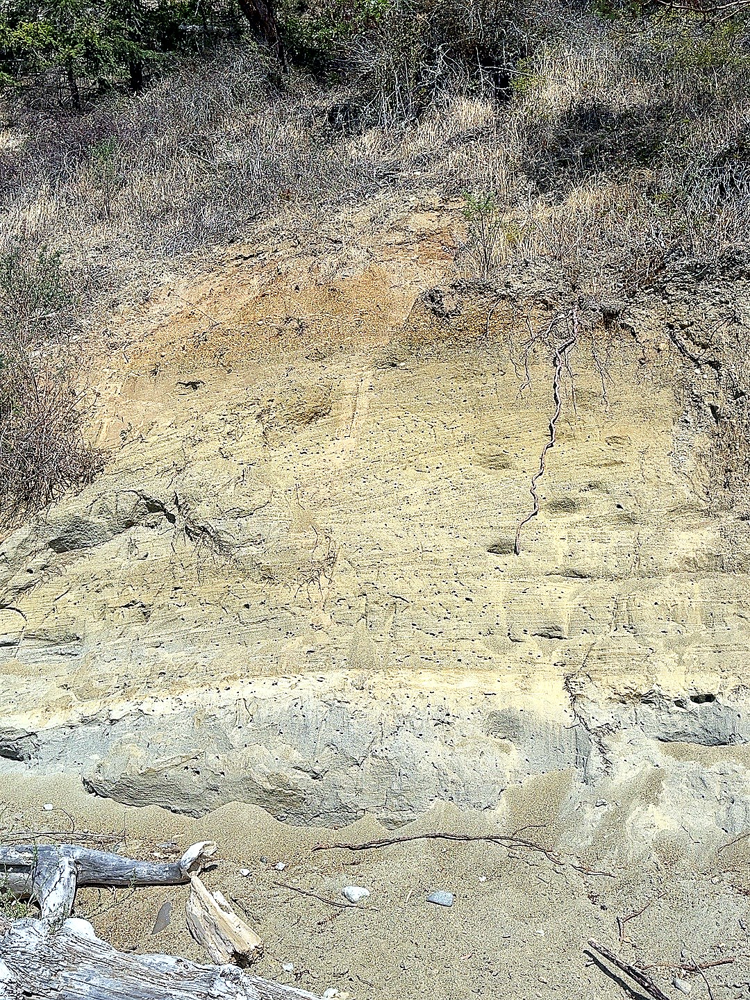

On a short stretch of shore, glacial sand and gravel preserve vanished ice and water; exposed roots record a retreating coastline; and tiny holes in the cliff may belong only to one summer. It feels like an open-air geology museum.

I came to Camano Island State Park and simply followed the beach northeast. Water lay to the right, woods to the left, with rounded stones and driftwood underfoot. Before long, the trees abruptly ended at the shore and a near-vertical earthen cliff appeared, as if a slice had been cut from the island's edge.

Up close, it was not one solid wall of “dirt.” The cliff contained sand, fine gravel, and rounded pebbles, changing in color and grain size from layer to layer. True topsoil was only a thin skin at the top. Camano Island was repeatedly shaped by glaciers and their meltwater: particles of different sizes were carried in, then left behind in different currents.

The most striking thing was the lines in the wall. Some ran flat; others swept diagonally in bundles, then changed direction nearby. Many were not grooves cut by rain, but the texture of the sediment itself. As flowing water moved sand ripples and channel banks, grains fell down a slope and left thin inclined layers. When the current changed, the next set changed angle too. This is cross-bedding.

Looking up, these layers now stand tens of meters above today's sea level. But that height belongs to the present. When the layers formed, the position of the glacier's front, the meltwater channels, and the land surface were all different; this shoreline did not yet exist. Later, the ice retreated, the landscape was cut open, and the modern coast arrived here. The high cliff is simply old sediment sliced open by a new coast.
Compacted sand and gravel can briefly hold a very steep slope, but waves and rain continually remove material from its foot and face. Take a little away from below and the material above overhangs, until a whole slab slips down and a new wall is exposed. A cliff is only the form that remains between two collapses.


The trees make the change immediate. Thick roots already hang in the air, and some trees lean toward the water as the sand and gravel that once held them disappears. A heavy rain, another round of undercutting, or simply their own weight can bring them down with the slope. Some of the big drift logs on the beach may be the coast sending its own trees into the sea.
Farther along, the diagonal layers become especially clear high on the wall, in close groups that look engraved into it. They are not marks left by today's sea reaching twenty meters up. They are the direction of long-ago water preserved in sand and gravel. Today's sea has only turned the page back open.

Near the end of the cliff, the sediment becomes finer and the wall fills with small holes. If small flying insects can be seen entering and leaving, they are likely burrows made by solitary bees or wasps. Each has its own entrance; they have simply chosen the same dry, fast-draining sand wall.
This small piece of coast presses several kinds of time into one slope. The sand and gravel preserve ice and water that vanished long ago. The exposed roots record recent shoreline retreat. The holes may belong to only a single summer. A person walks the shore for a few dozen minutes, yet the eye keeps moving between entirely different ages. Looking back, the cliff no longer seems like a wall. It feels more like an inner page of the land, accidentally opened; the waves are still turning it.